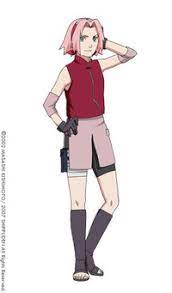
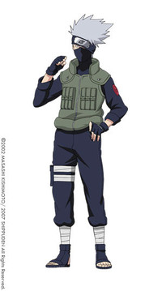

Naruto é uma série de mangá escrita e ilustrada por Masashi Kishimoto, que conta a história de Naruto Uzumaki, um jovem ninja que constantemente procura por reconhecimento e sonha em se tornar Hokage, o ninja líder de sua vila. A história é dividida em duas partes, a primeira parte se passa nos anos da pré-adolescência de Naruto: Naruto Clássico, e a segunda parte se passa em sua adolescência: Naruto Shippuden. A história de Naruto continua com o seu filho, Boruto Uzumaki em Boruto: Naruto Next Generations.
A partir de 2017, Naruto se tornou a terceira série de mangá mais vendida na história, vendendo mais de 220 milhões de cópias em todo o mundo, onde foi publicado em 35 países fora do Japão. Os críticos elogiaram o enredo, desenvolvimento de personagens, e as cenas de luta do mangá. Também observaram que o mangá tem uma história coming-of-age, com o uso de referências culturais da mitologia japonesa e do confucionismo.
Enredo
Naruto Clássico
A história principal se foca em Naruto e seu desenvolvimento quanto ninja, junto com os seus amigos. Também se centra nas interações entre estes e a influência do ambiente em suas personalidades. Conforme transcorre a série, Naruto se relaciona com Sasuke Uchiha e Sakura Haruno, com quem forma o “Time 7”, juntamente com o sensei Kakashi Hatake. Cabe mencionar que Naruto confia muito neles assim como em em outros personagens que irá conhecendo mais adiante. Enquanto eles aprendem novas habilidades e conhecem novas pessoas e lugares em suas missões, Naruto luta por seu sonho de se tornar o líder máximo de sua aldeia (Hokage) e ser reconhecido como alguém importante. No início, a série se enfoca nos integrantes do Time 7, Naruto, Sasuke e Sakura. Pouco depois, Orochimaru (um dos vilões mais procurados) ataca a Aldeia Oculta da Folha, assassinando o Terceiro Hokage em um ato de vingança pessoal. Isso acaba desencadeando que Jiraiya, um dos três ninjas legendários (Sannins), inicie a busca da sua antiga companheira de equipe Tsunade para designá-la como a Quinta Hokage.
Durante a sua busca é revelado que Orochimaru quer encontrar Sasuke (a quem conhece por suas técnicas de dōjutsu) para oferecer-lhe o poder que tanto deseja para matar seu irmão Itachi Uchiha, responsável pelo assassinato de todo seu clã. Sasuke aceita a proposta de Orochimaru e vai treinar com ele, e por isso traindo a sua aldeia.
Enquanto isso, Naruto decide fazer algo a respeito, e então resolve deixar a aldeia junto com Jiraiya durante dois anos e meio com o objetivo de treinar e preparar-se para a próxima vez que encontrar Sasuke, a quem tentará salvar.
Imagem Naruto Clássico
Naruto Shippuden
Ao concluir o período de treinamento, Naruto regressa a aldeia justo quando uma misteriosa organização denominada Akatsuki está tentando capturar as nove poderosas bestas Bijuus, incluindo a “Raposa de Nove Caudas” que permanece selada dentro dele, com a finalidade inicial de ganhar muito dinheiro, além de controlar e dominar todas as guerras do mundo, e então chegar a dominação mundial, porém por trás disso, existe um objetivo maior, o plano Olho da Lua (Tsuki no Me). O Time 7 e vários outros ninjas da aldeia lutam contra os membros da Akatsuki, somando-se também a missão de resgatar seu antigo companheiro Sasuke. Ao mesmo tempo, este trai Orochimaru e enfrenta Itachi para realizar sua vingança. Embora Itachi morra, Sasuke escuta uma revelação de um membro da Akatsuki, Madara Uchiha, onde explica que Itachi teve a ordem de eliminar seu clã dada pelo alto comando da aldeia. Entristecido por isso, Sasuke ingressa nas forças da Akatsuki com o objetivo de destruir a aldeia. Enquanto isso, vários membros da Akatsuki vão capturando as Bijuus e os Jinchūrikis, enquanto dois integrantes da organização, Pain e Konan, invadem e destroem a aldeia em busca de Naruto. Entretanto, Naruto vence Pain e o convence a deixar a Akatsuki. Em seguida, Pain utiliza suas últimas forças para reviver os habitantes da Aldeia da Folha. Imediatamente depois do ataque de Pain, o Raikage faz um chamado para as demais aldeias para discutir sobre Sasuke, o qual atacou a Aldeia Oculta da Nuvem, isto incita Naruto a dirigir-se ao País do Metal para negociar o castigo de Sasuke. Depois disso, Madara chega na reunião das Cinco Grandes Nações, explicando que sua intenção é obter o poder de todas as Bijuus e os utilizar em seu plano do “Olho da Lua”, que consiste em criar uma ilusão a nível global, suficientemente poderosa parta controlar a humanidade, através da lua. Diante disso, todos os líderes das cinco vilas ninjas, recusando lhe apoiar, se unem para confrontá-lo; por isso, decidem esconder os últimos Jinchūrikis dentro de uma ilha secreta no País do Trovão. Ali, Naruto conhece Killer Bee, um shinobi que contém a Gyuuki dentro dele, e Naruto pede ajuda para que o treine para que possa controlar de forma correta o chakra da Raposa de Nove Caudas. Depois de um árduo treinamento, Naruto obtêm com êxito o controle do poder da raposa, com a ajuda do espírito de sua mãe, Kushina Uzumaki. Com uma nova habilidade, Naruto descobre que Kisame Hoshigaki contêm as informações sobre o lugar onde se escondem as últimas bestas; este se suicida, mas consegue mandar a mensagem com êxito. Enquanto isso Madara vai em busca dos olhos de Nagato, matando Konan no processo, e manda Kabuto capturar os dois ninjas restantes.
Graças ao conhecimento de Orochimaru, Kabuto utiliza um jutsu proibido e revive ninjas famosos para os utilizar na guerra que se aproxima, enquanto que a Aliança Shinobi se prepara de igual maneira. Dentre os mortos ressuscitados, estão Os Irmãos de Ouro e Prata, Ginkaku e Kinkaku, que possuem parte do chakra da Raposa de Nove Caudas, e devido a isto Naruto fica sabendo do que está se sucedendo. Uma vez que se da conta da guerra, Naruto foge com Bee e em seu caminho se encontra com Tsunade e o Raikage; este último tenta persuadi-los para que não se entrometam na batalha, mas Naruto se nega e finalmente o convence a deixá-los ir combater a Akatsuki. Os dois Jinchūrikis, com a ajuda de vários clones das sombras de Naruto, combatem um exército de Zetsus, seres criados a partir do DNA do primeiro Hokage, o que dá vantagem para as forças da Aliança; Gaara e os demais shinobis confrontam os ninjas revividos pelo Edo Tensei. Depois disso, Itachi e Nagato se encontram com Naruto e Bee, e começam a lutar; o Uchiha consegue libertar-se do controle de Kabuto sobre a técnica de ressurreição e ajuda os outros a derrotar Nagato. Pouco depois, Kabuto faz com que o segundo Tsuchikage reviva o seu mais poderoso guerreiro, Madara Uchiha; isto dá a entender que o verdadeiro líder da Akatuki, Tobi, usou na realidade esse nome com o fim de intimidar os seus adversários. Ōnoki – o atual Tsuchikage – e Gaara se veem encurralados pela força de Madara, mas os Kages restantes chegam para equilibrar a situação. Com a ajuda do rin'negan, Tobi cria uma armadilha para Naruto e Bee, já que tem sob o seu comando os cadáveres dos antigos Jinchūrikis com suas respectivas bestas seladas neles. A batalha contra Tobi se intensifica, e depois de descobrir como funciona o seu jutsu especial, conseguem revelar sua verdadeira identidade, o qual se trata de um antigo companheiro de Kakashi Hatake, Obito Uchiha, que presumia-se estar morto. Imediatamente o verdadeiro Madara Uchiha chega na batalha depois de derrotar os cinco Kages, e também o resto do exército ninja chega para apoiar Naruto, e nesse momento Madara e Obito revivem a besta de dez caudas. A luta continua com a chegada dos antigos 4 Hokages e Sasuke Uchiha, que decide apoiar Naruto. Durante a série de batalhas Obito usa o poder das dez caudas, e depois de uma série de eventos e da morte de alguns personagens, conseguem tirar este poder e liberar as Bijuus, as quais são retomados por Madara, que fere gravemente Naruto e Sasuke. Com a ajuda dos recém redimidos Kabuto e Obito, estes voltam a batalha, agora com os poderes incrementados proporcionados pelo sábio dos 6 caminhos, filho da Deusa Kaguya. Madara lança o Tsukuyomi Infinito com o qual se concretiza o plano do “Olho da Lua" (Tsuki no Me). Todos na Terra, com exceção de Naruto, Sasuke, Sakura, Kakashi e Obito entram dentro da ilusão. Depois Madara seria traído pelo Zetsu negro, que na realidade é filho de Kaguya, e este usa Madara para trazer a vida a sua mãe, a qual deseja recuperar todo o seu poder, absorvendo o poder de todos os que estavam presos dentro da ilusão, mas depois de uma batalha é selada junto com o Zetsu Negro. Nesse ponto Sasuke tenta matar os 5 Kages, as 9 Bijuus e Naruto (por consequência de ser o Jinchūriki de todas as 9 Bijuus), argumentando que deseja formar um mundo sem o sistema ninja, porém é vencido por Naruto na batalha final. Depois disso eles desfazem o Tsukuyomi Infinito com o rin'negan de Sasuke e o chakra das 9 Bijuus de Naruto. Após voltarem para a vila, Sasuke se redime e parte em viagens a fim de ver como o mundo a fora ficou após tudo isso e buscando redenção por seus pecados e Kakashi vira o sexto Hokage. Mais de 12 anos após o término da quarta grande guerra ninja, Naruto cumpre o seu sonho de se tornar o Hokage e ser reconhecido por todos da aldeia, ele se casa com Hinata e juntos tem um filho, Boruto Uzumaki, e uma filha, Himawari Uzumaki, enquanto Sasuke se casa com Sakura e juntos tem uma filha, Sarada Uchiha.
Imagem Naruto Shippuden
Elementos da história
Naruto tem um grande número de personagens que, em sua maioria, se distinguem por serem ninjas. A princípio estudam na Academia Ninja, porém logo são divididos em trios Genins (grupos de ninjas novatos), os quais são designados a um sensei experiente. Estes núcleos se convertem sucessivamente nas bases para a interação entre os personagens, onde as equipes são elegidas para missões de acordo com o seu desempenho e suas capacidades. O “Time 7” se converte pouco a pouco no marco social onde Naruto começa a conviver, para ir se familiarizando com seus companheiros Sasuke e Sakura, como também o seu sensei Kakashi, com quem integram o elenco principal da história. As outras equipes são formadas por antigos companheiro de classe de Naruto, com os quais ele se conecta por meio de vários aspectos, aprendendo suas vulnerabilidades e aspirações, aspectos que frequentemente relaciona com sua própria vida. Não obstante, não existem somente trios de ninjas, mas também existem exceções de conjuntos formados por múltiplos de três. No mundo de Naruto, os países operam como entidades políticas separadas, governadas por senhores feudais. Dentro destes países estão as aldeias ocultas. Uma aldeia oculta mantém a economia do país por meio da formação de jovens ninjas desde da infância, utilizando-os para realizar missões em outros países e cobrar por elas. O ninja de uma aldeia oculta também serve como uma força militar para o país de origem. Cabe mencionar que os líderes das aldeias ocultas estão em igual posição com os líderes dos respectivos países. Na trama, existem cinco países diferentes: o País do Vento, o País do Fogo, o País do Trovão, o País da Água e o País da Terra (conhecidos integralmente como as “Cinco Grandes Nações Shinobis”). Estes países são os mais poderosos no mundo de Naruto, sendo governados por um senhor feudal, enquanto que os líderes das aldeias ocultas nos ditos países ostentam o título de Kage. Foram mencionados outras nações aparentemente mais pequenas no mangá e no anime, mas suas informações não foram todas reveladas.
Personagens
A grande maioria dos personagens introduzidos na série são ninjas provenientes das aldeias e facções que aparecem na história. Os protagonistas pertencem a Aldeia Oculta da Folha e o enredo é narrado em sua maioria em torno de suas aventuras.
O personagem principal que dá nome a série é Naruto Uzumaki, um jovem ninja que carrega em seu interior o demônio Kyūbi, e deseja ser o Hokage de sua aldeia, já que ninguém queria estar perto dele por causa da Kyūbi e para demonstrar seu verdadeiro poder, como igualmente sua valentia. Seus companheiros de grupo (no início da série) são Sasuke, Sakura e Kakashi (este último seu mestre sensei). Com o desenrolar da história, o grupo muda a partir do momento que Sasuke decide abandonar a aldeia para realizar sua vingança pessoal. Pouco depois, Naruto se converte em aprendiz de Jiraiya, um pervertido guerreiro.
Imagem do personagem Naruto Uzumaki
Sasuke Uchiha é um membro da clã Uchiha. É um garoto sério, e possui uma grande habilidade para as artes ninjas estilo de fogo. Seu objetivo é ser suficientemente forte para derrotar seu irmão maior Itachi, que assassinou todos os demais membros do seu clã. Em seguida, abandonará a aldeia para treinar com Orochimaru, um ninja corrompido e sem piedade, que busca dominar todos os ninjutsus do mundo.
Imagem do personagem Sasuke Uchiha
A única garota do grupo é Sakura Haruno, que inicialmente está apaixonada por Sasuke, tal como todas as suas companheiras da Academia Ninja e despreza Naruto. Ao avançar da história, Sakura começa a gostar da amizade de Naruto. Se torna aprendiz de Tsunade, com quem aprende técnicas medicinais ninjas.

Imagem da personagem Sakura Haruno
Kakashi Hatake é o primeiro mestre da equipe de Naruto, Sasuke e Sakura. É um ninja experiente, severo a primeira vista e amante das novelas para adultos, e se preocupa muito com o trabalho em equipe. Possui um Kekkei Genkai, o Sharingan em seu olho esquerdo, o qual obteve por parte de um membro do clã Uchiha que era seu amigo (Obito Uchiha). Com este olho, Kakashi copiou muitas técnicas de outros ninjas, o que lhe rendeu o nome de “O Ninja que Copia”.

Imagem do personagem Kakashi Hatake
Os demais personagens principais se encontram nas outras equipes ninjas que compartilharam a classe com Naruto na Academia Ninja, junto com seus respectivos mestres. Destacam os times formados por Ino, Choji, Shikamaru e o sensei Asuma, o de Hinata, Kiba, Shino e o sensei Kurenai, e o time formado por Rock Lee, Tenten, Neji e o sensei Maito Gai.
Outros personagens importantes para a história são os “Três Ninjas Lendários” (Tsunade, Jiraiya e Orochimaru), além dos membros da Organização Akatsuki, formado por ninjas renegados de diversas procedências, cujo objetivo é capturar os demônios Bijuu por um motivo que será revelado conforme avança a história. Esta organização foi criado sob a influência de Obito Uchiha, que junto com Madara Uchiha e a Deusa Kaguya seriam os três antagonistas principais.
Mídias
Mangá
Os capítulos de Naruto foram publicados na revista Weekly Shonen Jump da editora Shueisha de 21 de setembro de 1999 (nº 43) a 10 de novembro de 2014 (nº 50). O mangá também foi publicado em 72 volumes em formato tankōbon no Japão e em outros países, com os 27 primeiros volumes correspondendo a Parte I, e o resto a Parte II. Os primeiros 238 capítulos pertencem a Parte I e constituem a primeira parte do enredo de Naruto, enquanto que os capítulos 239 a 244 compreendem uma série gaiden que foca no passado do personagem Kakashi Hatake. Já o resto dos capítulos pertencem à Parte II (245 a 700), que continua o enredo após um intervalo de tempo de dois anos e meio. A editora Shueisha compilou estes capítulos e os publicou em 72 volumes tankōbon, com os primeiros 27 volumes tankōbon pertencendo à Parte I, e os volumes subsequentes pertencendo à Parte II. O primeiro volume tankōbon foi publicado em 3 de março de 2000. E o último volume tankōbon foi publicado em 4 de fevereiro de 2015. Além disso, vários volumes film comics baseados em cada um dos filmes de Naruto, foram publicados pela Shueisha. A editora Shueisha também lançou a série de mangá em japonês para download de celular em seu website Shueisha Manga Capsule. No lançamento do capítulo final da série, uma minissérie centrada nos filhos dos personagens principais foi anunciada. Intitulada Naruto Gaiden: Nanadaime Hokage to Akairo no Hanatsuzuki . A série começou sua serialização em 27 de abril de 2015 na revista Weekly Shonen Jump, e terminou após dez capítulos em 6 de julho de 2015, que foram compilados e lançados em volume único. No Brasil, este volume único foi publicado pela editora Panini Comics em outubro de 2016.
No Brasil, o mangá é licenciado pela editora Panini Comics e foi publicado entre maio de 2007 e junho de 2015. Uma versão de bolso foi publicada em maio de 2010 a maio de 2016. Atualmente, é publicado numa edição de colecionador desde julho de 2015. Em Portugal, é licenciado e publicado pela editora Devir Manga desde julho de 2013.
Anime
Tetsuya Nishio foi o designer de personagens de Naruto quando o mangá foi adaptado para uma série de anime; Kishimoto pediu que Nishio recebesse esse cargo. Dirigido por Hayato Date e produzido pelo Studio Pierrot e TV Tokyo, o anime de Naruto estreou no Japão em 3 de outubro de 2002, e foi concluído em 8 de fevereiro de 2007 depois de 220 episódios. Os primeiros 135 episódios foram adaptados da Parte I do mangá; os restantes 85 episódios são originais e usam elementos do enredo que não estão no mangá. Uma versão remasterizada em alta definição do anime com novos efeitos 2D e 3D foi lançada sob o título Naruto: Shōnen Hen. Coletâneas dos episódios da série foram lançadas para VHS e DVD.
Viz Media licenciou a série de anime para transmissão e distribuição no Brasil e em Portugal, porém, em 2017 a série passou a ser licenciada e distribuída pela Televix Entertainment na América Latina. A adaptação brasileira do anime foi exibida na Cartoon Network e no SBT em 2007 a 2011. Atualmente, está sendo transmitida pela Warner Channel desde julho de 2022, no bloco Wanimé. No streaming, a série é exibida pelos serviços Crunchyroll, Netflix, Claro Video e Pluto TV. A série também foi lançada em DVD no país pela PlayArte. Já a adaptação portuguesa estreou em julho de 2008 na SIC Radical, em agosto de 2008 passou a ser transmitida pela SIC, e em janeiro de 2009 estreou no Animax Portugal e na SIC K em 2011.
Naruto: Shippuden, desenvolvido pelo Studio Pierrot e dirigido por Hayato Date, é a sequência do anime Naruto; ele corresponde à Parte II do mangá. Ele estreou na TV japonesa em 15 de fevereiro de 2007, na TV Tokyo, e foi finalizado em 23 de março de 2017. Em 8 de janeiro de 2009, a TV Tokyo começou a transmitir os novos episódios da série via streaming para assinantes mensais. Cada episódio transmitido estava disponível online dentro de uma hora depois após sua estreia na televisão japonesa e inclui legendas em inglês. No Brasil, o anime foi transmitido na PlayTV em 2015 até 2017, e atualmente é exibido nos serviços de streaming Crunchyroll, Netflix e Claro Video. Em Portugal, Naruto Shippuden estreou na SIC Radical em dezembro de 2009, no Animax Portugal em fevereiro de 2010 e na SIC K em 2011.
A série foi lançada em DVD no Japão com quatro ou cinco episódios por disco; sendo que existe quatro séries de lançamentos de DVD divididos pelo arco da história. Na sétima coletânea do DVD de Naruto Shippuden foi incluída uma história extra chamada Hurricane! "Konoha Academy" Chronicles. A história extra Kakashi Gaiden - Senjō no Bōizu Raifu foi lançada em 16 de dezembro de 2009; junto com o DVD dos episódios 119-120, e a história gira em torno da infância de Kakashi Hatake. No Brasil, o DVD de Naruto Shippuden é lançado pela PlayArte.